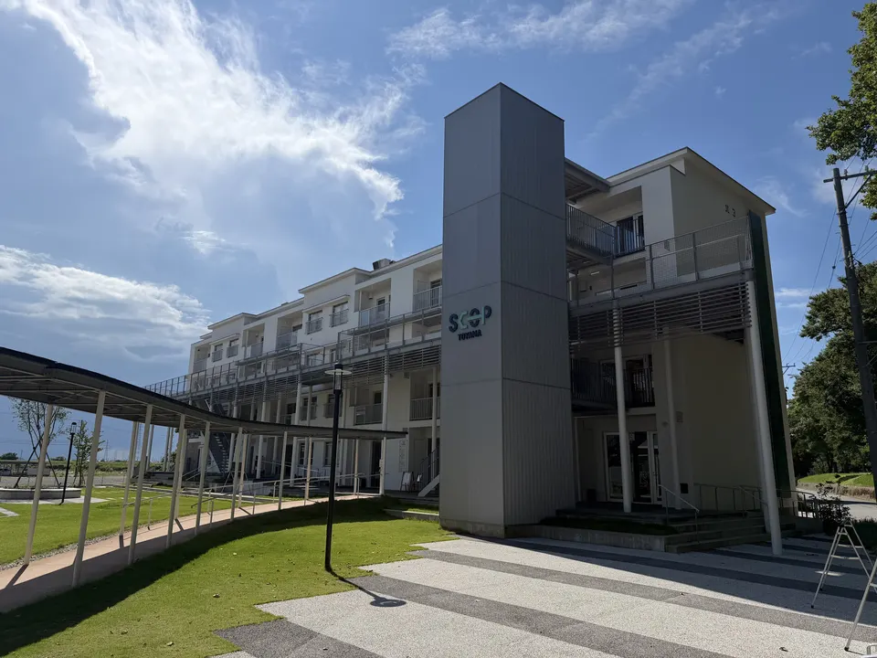

01
コストを意識した経営支援
助成金の
企業が
私たちは
助成金の
継ぎ接ぎに
法改正や
手続き・給与計算・
創業期・
PHASE 01
従業員10名程度まで
加入手続き、
PHASE 02
従業員10〜50名程度
規程、
PHASE 03
従業員50名以上
評価、
手続き中心、
顧問契約が
目の前の
単発の
BASIC
¥35,000／月
従業員5名まで
創業
年次手続きまで
STANDARD
¥55,000／月
従業員10名まで
創業
手続きに
CUSTOM
お見積もり
内容・
月額契約は
人数・
表示価格は
経営者の
社内書式は
業務内容や

助成金、手続きの効率化、トラブル予防——
平
この
普段お使いの
※ 回答は